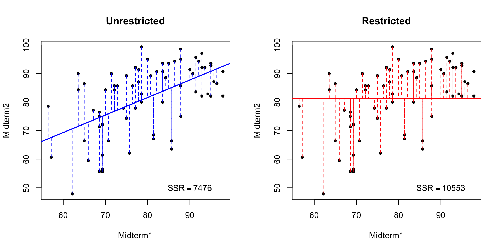

midterms <- read.csv('https://ditraglia.com/econ103/midterms.csv')
head(midterms) Midterm1 Midterm2
1 57.14 60.71
2 77.14 77.86
3 83.57 93.57
4 88.00 NA
5 69.29 72.14
6 80.71 89.29Francis J. DiTraglia
August 15, 2021
The F-statistic for a test of multiple linear restrictions is a staple of introductory econometrics courses. In the simplest case, it can be written as \[F \equiv \frac{(SSR_r - SSR_{u})/q}{SSR_{u} / (n - k - 1)}\] where \(SSR_r\) is the restricted sum of squared residuals, \(SSR_{u}\) is the unrestricted sum of squared residuals, \(q\) is the number of restrictions, and \((n - k - 1)\) is the degrees of freedom of the unrestricted model.1
In my experience, students encountering this expression for the first time find it bewilderingly arbitrary; it becomes just one more item to add to a list of formulas memorized for the exam and promptly forgotten. My aim in this post is to demystify the \(F\) statistic. By the end, I hope that you will find the form of this expression intuitive, perhaps even obvious.
This is not a post about asymptotic theory, and it is not a post about heteroskedasticity. I will not prove that \(F\) follows an \(F\)-distribution, and I will blithely assume that we inhabit the idealized textbook realm in which all errors are homoskedastic. I will also dodge the question of whether you should even be carrying out an F-test in the first place.2 This is a post about understanding what the \(F\)-statistic measures and why it takes the form that it does.
The best way to understand the \(F\)-statistic is by looking at an example that’s so simple that there’s no reason to use an \(F\)-test in the first place. Here’s a dataset of students’ scores on two introductory statistics midterms that I gave many years ago:
Midterm1 Midterm2
1 57.14 60.71
2 77.14 77.86
3 83.57 93.57
4 88.00 NA
5 69.29 72.14
6 80.71 89.29As you can see, there is at least one missing observation: student #4 scored 88% on the first midterm, but missed the second. In fact, nine students missed the second midterm:
Midterm1 Midterm2
Min. :56.43 Min. :47.86
1st Qu.:70.53 1st Qu.:74.64
Median :80.36 Median :84.29
Mean :79.74 Mean :81.39
3rd Qu.:87.86 3rd Qu.:90.71
Max. :97.86 Max. :99.29
NA's :9 To keep this example as simple as possible, I’ll drop the missing observations.3
Let’s call student #4 Natalie: she scored 88% on the first midterm but missed the second. Suppose we wanted to predict how well Natalie would have done on the second midterm had she taken it. There are many ways that we could try to make this prediction. One possibility would be to ignore Natalie’s score on the first midterm, and predict that she would have scored 81.4 on the second: the average score among all students who took this exam. Another possibility would be to fit a linear regression to the scores of all students who took both exams and use this to project Natalie’s score on midterm two based on her score on midterm one. If scores on the two exams are correlated, option two seems like a better idea: Natalie outperformed the class average on midterm one by 8.4 or roughly 0.77 standard deviations. It seems reasonable to account for this when predicting her score on the second exam.
In fact both of these prediction rules can be viewed as special cases of linear regression. Let \(x_i\) denote student \(i\)’s score on midterm one and \(y_i\) denote her score on midterm two. The sample mean \(\bar{y} = \frac{1}{n} \sum_{i=1}^n y_i\) solves the optimization problem \[ \min_a \sum_{i=1}^n (y_i - a)^2 \] which is simply least squares without a predictor variable.4 In contrast, the usual least-squares regression problem is \[ \min_{a,b} \sum_{i=1}^n (y_i - a - b x_i)^2 \] with solutions \(\hat{a} = \bar{y} - \hat{b} \bar{x}\) and \(\hat{b} = s_{xy} / s_x^2\), where \(s_{xy}\) is the sample covariance of scores on the two midterms and \(s_x^2\) is the sample variance of scores on the first midterm. Notice how these two optimization problems are related: the first is a restricted (aka constrained) version of the second with the constraint \(b = 0\). In the discussion below, I will call the first of these the restricted regression and the second the unrestricted regression.
It’s easy to fit these regressions in R. We’ll start with the restricted:
Call:
lm(formula = Midterm2 ~ 1, data = midterms)
Residuals:
Min 1Q Median 3Q Max
-33.531 -6.746 2.899 9.319 17.899
Coefficients:
Estimate Std. Error t value Pr(>|t|)
(Intercept) 81.391 1.457 55.86 <2e-16 ***
---
Signif. codes: 0 '***' 0.001 '**' 0.01 '*' 0.05 '.' 0.1 ' ' 1
Residual standard error: 12.28 on 70 degrees of freedomThe syntax Midterm2 ~ 1 specifies a regression formula containing no predictor variables, only an intercept. Notice that our estimate for the intercept agrees with the sample mean score on the second midterm from above, as it should!
Turning our attention to the unrestricted regression, we see that scores on the first midterm are strongly predictive of scores on the second:
Call:
lm(formula = Midterm2 ~ Midterm1, data = midterms)
Residuals:
Min 1Q Median 3Q Max
-22.809 -7.127 2.047 8.125 18.549
Coefficients:
Estimate Std. Error t value Pr(>|t|)
(Intercept) 32.575 9.243 3.524 0.000759 ***
Midterm1 0.613 0.115 5.329 1.17e-06 ***
---
Signif. codes: 0 '***' 0.001 '**' 0.01 '*' 0.05 '.' 0.1 ' ' 1
Residual standard error: 10.41 on 69 degrees of freedom
Multiple R-squared: 0.2916, Adjusted R-squared: 0.2813
F-statistic: 28.4 on 1 and 69 DF, p-value: 1.174e-06For a pair of students who differed by one point in their scores on the first midterm, we would predict a difference of 0.61 points on the second.
The restricted regression ignores a student’s score on the first midterm when predicting her score on the second. But we’ve seen from the unrestricted regression that scores on midterm #1 are strongly correlated with scores on midterm #2. As such, our best bet is to predict Natalie’s second midterm score using the unrestricted regression model:
Because Natalie scored above the mean on the first exam, we predict that she will score above the mean on the second exam.
While I didn’t present it in this way, the choice between restricted and unrestricted regressions above could be formulated as a hypothesis test. The restricted regression imposes a zero regression slope, but the unrestricted regression doesn’t. In this case, we can test the restriction that the slope is in fact zero using simple t-test. Based on the t-statistic of 5.33 from above we would easily reject the restriction at any conventional significance level.5
But there’s another way to carry out the same test. Although it would be overkill in this example, the principles that underlie it can be used to carry out tests in more complicated situations where a simple t-test wouldn’t suffice. Rather than examining the slope estimate from the unrestricted regression, this alternative approach compares the sum of squared residuals (SSR) of the two regressions to see which does a better job of fitting the observed data.6 It’s easy to compute the SSR of the two regressions from above using the residuals() function:
Unrestricted Restricted
7475.741 10552.883 The SSR of the restricted regression is higher than that of the unrestricted regression. But what exactly should we make of this? A picture can help to make things clearer. This one has two panels: one for the restricted regression and another for the unrestricted regression. Each panel plots the observations from the midterms dataset along with the fitted regression line, using dashed vertical lines to indicate the residuals: the distance from a given observation to the regression line.

Notice that the restricted regression line is flat because it does not use scores on the first midterm to predict those on the second. The lower SSR of the unrestricted model reflects the fact that the observations in the midterms dataset are on average closer to a line with slope 0.6 and intercept 32.6 than they are to a line with slope zero and intercept 81.4.
To understand this picture, it helps to think about the following question: is it possible for the unrestricted regression to have a higher SSR than the restricted one? Recall from above that each of these regressions is the solution to an optimization problem. The difference between them is that the restricted regression imposes a constraint while the unrestricted regression doesn’t. If the best slope for predicting second midterm scores using first midterm scores is zero, the unrestricted regression is free to set \(b = 0\). In this case its estimates would coincide with those of the restricted regression. On the other hand, if the best slope isn’t zero that means some other choice of \(b\) by definition results in a lower SSR: linear regression chooses the line whose slope and intercept minimize the squared vertical deviations between the data and the line. The restricted regression is forced to have \(b = 0\), so in this case it must do a worse job fitting the data.7 This reasoning shows that we will always find that the SSR of the restricted model is at least as large as that of the unrestricted model.
We shouldn’t be surprised to see that the unrestricted regression “fits the data” better than the restricted one: it can’t do otherwise unless the sample correlation between midterm scores is exactly zero. But there is still the question of how much better it fits. Taking differences tells us how much larger the SSR of the restricted model is compared to that of the unrestricted model:
So is this a big difference or a small difference? The answer depends on the units in which \(y\) is measured. A residual is a vertical deviation, i.e. a distance along the \(y\)-axis. This means that it has the same units as the \(y\)-variable. If \(y\) is measured in inches, so are the residuals; if \(y\) is measured in kilometers, so are the residuals. Because the SSR is a sum of squared residuals, it has the same units as \(y^2\). If \(y\) is measured in inches, the SSR is measured in square inches; if \(y\) is measured in kilometers, the SSR is measured in square kilometers. Changing the units of \(y\) changes the units of the SSR. For example, an SSR of one becomes an SSR of one million if we change the units of \(y\) from kilometers to meters. Accordingly, a comparison of SSR_r to SSR_u is meaningless unless we account for the units of \(y\).
The simplest way account for units is by eliminating them from the problem. This is precisely what we do when we carry out a t-test: \(\bar{x}/\text{SE}(\bar{x})\) is unitless because the standard error of \(\bar{x}\) has the same units as \(\bar{x}\) itself. Any change of units in the numerator would be cancelled out in the denominator. This is a crucial point: test statistics are unitless. We do not compare \(\bar{x}\) to a table of normal critical values measured in inches for a distribution with standard deviation \(2.4\); we compare \(\bar{x}/2.4\) to a unitless standard normal distribution.
The t-statistic eliminates units by taking a ratio, so let’s try the same idea in our comparison of SSR_r to SSR_u. There are various possibilities, and any of them would work just as well from the perspective of eliminating units. The F-test statistic is based on a ratio that asks how much worse the restricted model fits relative to the unrestricted regression. In other words, we ask: how much larger is SSR_r compared to SSR_u as a percentage expressed in decimal terms?
There is nothing subtle going on here. If we wanted to know how much larger US GDP is in 2021 compared to 1921, we would simply calculate \[ \frac{\text{GDP}_{2021} - \text{GDP}_{1921}}{\text{GDP}_{1921}} \] assuming, of course, that both of these figures are corrected for inflation! This is precisely the same reasoning that we used above: the SSR “grows” when we impose a restriction. We want to know how much it grows as a percentage. The answer is 0.41 or equivalently 41%.
We’ve nearly arrived at the F-statistic. To see what’s missing, we’ll use a bit of algebra to re-write it as \[F \equiv \frac{(SSR_r - SSR_{u})/q}{SSR_{u} / (n - k - 1)} = \left(\frac{SSR_r - SSR_u}{SSR_u}\right) \left(\frac{n - k - 1}{q}\right).\] We obtained the first factor on the RHS, \((SSR_r - SSR_u) / SSR_u\), simply by reasoning about units and the nature of constrained versus unconstrained optimization problems. Stop for a minute and appreciate how impressive this is: simple intuition has taken us halfway to this rather formidable-looking expression. To understand the second factor, we need to think about sampling uncertainty.
In the midterms example we found that the restricted regression SSR was 41% larger than the unrestricted one. Is this a big difference or a small one? Units don’t enter into it, because we have already eliminated them. But the midterms dataset only contains information on 71 students. If we merely want to summarize the relationship between test scores for these students, there is no role for statistical inference: summary statistics suffice. Tests and confidence intervals enter the picture when we hope to generalize from an observed sample to the population from which it was drawn. Imagine a large population of introductory statistics students who took my two midterms. Now suppose that we observe a random sample of 71 students from this population. How much information do the observed exam scores for these students provide about the relationship between midterm scores that we in the population?8
The larger the sample size, the more evidence an observed difference in the sample provides about a potential difference in the population. We can see this in the expression for the standard error of the sample mean: \(\text{SE}(\bar{X}) = \sigma_x/\sqrt{n}\). The larger the sample size, the smaller the standard error, all else equal. Accordingly, given two datasets with identical summary statistics, the larger sample will have the larger t-statistic. The same reasoning applies to the F-statistic above. The numerator \((n - k - 1)\) in the second factor increases with the sample size \(n\). This magnifies the effect of the first factor. An \(SSR_r\) that is 41% higher than the \(SSR_u\) is “more impressive” evidence when the sample size is \(1000\) than when it is \(10\). Small samples are intrinsically more variable than large ones, so we should expect them to turn up anomalous results more frequently. The F-statistic takes this into account.
So why \((n - k - 1)\) rather than \(n\)? This is a so-called “degrees of freedom correction.” By estimating \(k\) regression slope parameters and \(1\) intercept parameter, we “use up” \((k + 1)\) of the observations, leaving only \((n - k - 1)\) pieces of truly independent information. This is not particularly intuitive. In a stunning departure from my usual advice to introductory statistics and econometrics students, I suggest that you simply memorize this part of the F-statistic. It may help to notice that the same degrees of freedom correction appears in the expression for the standard error of the regression, \(SER \equiv \sqrt{SSR/(n - k - 1)}\), a measure of the average distance that the observed data fall from the regression line.
The only as-yet-unexplained quantity in the F-test statistic is \(q\). This denotes the number of restrictions imposed by the restricted model. Counting restrictions is the same thing as counting equals signs. In a regression of the form \(Y = \beta_0 + \beta_1 X + U\) a restriction of the form \(\beta_1 = 1\) gives \(q = 1\) because there it takes a single equals sign to assert that \(\beta_1\) equals one. More complicated regressions allow more complicated kinds of restrictions. For example, in the regression \[ Y = \beta_0 + \beta_1 X_1 + \beta_2 X_2 + \beta_3 X_3 + U \] we could consider the restriction \(\beta_1 = \beta_2 = \beta_3 = 0\) yielding \(q =3\). Alternatively we could consider \(\beta_0 = \beta_2 = 7\) yielding \(q = 2\). We could even consider \(\beta_1 + \beta_2 = 1\) yielding \(q = 1\). Again: to count the number of restrictions, count the number of equals signs that it requires to express these restrictions.
Now we know how to determine \(q\), but the question remains: why does it enter the F-test statistic? Above we discussed why \(SSR_u\) cannot exceed \(SSR_r\) in a particular dataset. Now we have to think about what happens when sampling uncertainty enters the picture. The sum of squared residuals measures how well a linear regression model fits the observed dataset. Crucially, this is the very same dataset that was used to calculate the regression slope and intercept. In effect, we have used the data twice: first to determine the parameter values that minimize the sum of squared vertical deviations and then to assess how well our regression fits the data, measured by the same vertical deviations. The danger lurking here is a phenomenon called overfitting. We’re not really interested in how well the regression fits this dataset; what we want to know is how well it would help us to predict future observations. In-sample fit, as measured by SSR or related quantities, can be shown to be an over-optimistic measure of out-of-sample fit. This is well-known to machine learning practitioners, who generally use one dataset to fit their models, the training data, and a separate dataset, the test data, to evaluate their predictive performance. In general, the more “flexible” the model, the worse the overfitting problem becomes. Because adding restrictions reduces a model’s flexibility, this creates a challenge for any procedure that compares the in-sample fit of two regressions. Because it is less flexible, we should expect the restricted regression to fit the sample data less well than the unrestricted regression even if the restrictions are true in the population.
To drive this point home, I generated a dataset called sim_data in which \(Y_i = \alpha + \epsilon_i\) where \(\epsilon_i \sim \text{Normal}(0, 1)\). I then simulated a large number of regressors \((X_{i1}, X_{i2}, \dots, X_{iq})\) completely independently of \(Y_i\). (For the simulation code, see the appendix below.) In the population from which I simulated my data, none of these regressors contains any information to predict \(Y\). Nevertheless, if \(q\) is relatively large compared to the sample size \(n\), some of these regressors will appear to be correlated with \(Y\) based on the observed data, purely because of sampling variability. In this example I set \(n = 100\) and \(q = 50\). Fitting a restricted regression with only an intercept, and an unrestricted regression that includes all 50 regressors from sim_dat we obtain
[1] 0.9144509Even though the restrictions are true in this simulation study, the restricted SSR is 91% larger than the unrestricted SSR purely due to sampling variability. The F-statistic explicitly takes this phenomenon into account via the scaling factor \((n - k - 1) / q\). What matters is not the sample size per se, but the sample size relative to the number of restrictions imposed by the restricted regression.
Now that we understand why the F-test statistic takes the form that it does, let’s carry out the F-test in each of the two examples from above: midterms and sim_dat. Under the null hypothesis that the constraints imposed by the restricted regression are correct, the F-test statistic follows an \(F(q, n-k-1)\) distribution.9 For the midterms dataset our test statistic is
while the 10%, 5% and 1% critical values for an \(F(1, 69)\) distribution are
The associated p-value is
so we resoundingly reject the restriction: first midterm scores clearly do help to predict second midterm scores. The sim_data example gives a very different result. The test statistic in this example is well below any standard critical value, and the p-value is very large:
[1] 0.8961619[1] 1.444392 1.604442 1.957803[1] 0.6497498In this case we would fail to reject the restrictions. Indeed, the restrictions are true: my simulation generated regressors that are completely independent of \(Y\)!
The F-statistic is a product of two factors. The first factor measures how much larger the sum of squared residuals becomes in percentage terms when we impose the restriction. We use a relative comparison to eliminate units from the problem. The second factor accounts for sampling variability. The larger the sample size \(n\) relative to the number of restrictions \(q\), the more we “inflate” the value of the first factor. The only thing you need to memorize is the degrees of freedom correction: \((n - k - 1)\).
I used the following code to generate my plot comparing the SSR of the restricted and unrestricted regression models in the midterm exams dataset from above:
and the following code to generate the data contained in sim_data
Specifically, the “simplest case” refers to a setting in which both the restricted and unrestricted models include an intercept and we assume homoskedasticity.↩︎
See F-Tests, R-squared, and Other Distractions for an insightful critique.↩︎
Health warning: it dangerous to glibly drop missing observations in applied work! The key question is why those nine students missed the second exam. If their reasons for doing so are “as good as randomly assigned,” e.g. a death in the family or an unexpected illness or injury, these observations as missing at random (MAR). In this case, dropping them is statistically innocuous. If instead these students’ reasons for missing the exam are related to their course performance, then dropping their observations could yield a misleading picture of the underlying relationship between midterm scores.↩︎
If you’re taking introductory statistics or econometrics it’s a good idea to try to prove this for yourself!↩︎
If you’re familiar with the “trinity” of classical tests (Score/LM, Likelihood Ratio, and Wald), this reasoning amounts to a Wald test: fit the unrestricted model and use the distance between the parameter estimates and their values under the restriction to form a test statistic. If the unrestricted estimates are close enough to the restriction, don’t reject it.↩︎
Again, if you’re familiar with the aforementioned “trinity” of tests, the procedure I’m about to describe amounts to a Likelihood Ratio Test: fit both the restricted and unrestricted models, and compare their maximized sample likelihoods. If the likelihoods are similar, don’t reject the restriction.↩︎
More generally, imposing a constraint can never result in a better solution to an optimization problem: at best it can leave the optimum unchanged.↩︎
It may be difficult to imagine a population from which the students who happen to have taken my course in a particular semester could be viewed as a random sample. For the purposes of this exercise I kindly ask you to suspend your disbelief.↩︎
Strictly speaking this requires the regression errors to be normally distributed and homoskedastic. If the errors are non-normal but homoskedastic, then the F-statistic is approximately distributed as an \(F(q, \infty)\) random variable for large \(n\). Life is much more complicated under heteroskedasticity, but this is a topic for a future post!↩︎